Project Planning
In this session, you will learn how to use Canvas basic tools to organize your ideas, notes, and tasks within your preferred channel, as well as set up reminders to manage important deadlines and commitments effectively within the channel environment.
Canvas Setup
-
Select a channel on the sidebar menu.
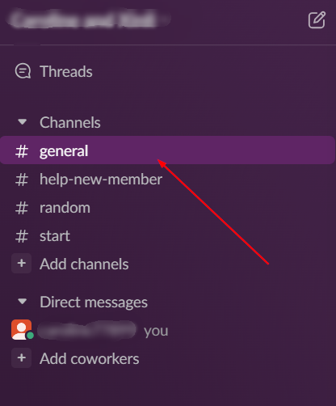 -
Create and edit Canvas.
- Click the Add-Notes icon in the top-right corner to open Canvas and add your notes. 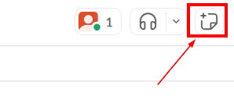
- Type in ideas and descriptions.
- At the bottom menu, click on the File icon 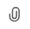 to add files.
- Click on Table icon 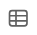 to add tables.
- Click on Check list icon 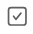 to add checklists.
-
Click the Close button icon to return to the channel.
Reminder Setup
-
In the message field, click on Slash icon 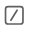 at the bottom to open the shortcuts menu, then select "remind" topic. (Or type in "/remind" directly in the message field)
-
Click on the Send icon 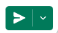 to create a new reminder.
-
In the new popup window, fill out the date, time, and description. Then click Save to save the reminder.
-
Click on the Later icon on the left of the sidebar menu.
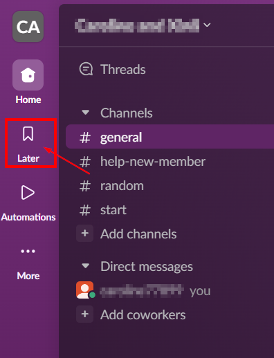 -
Check if there is a newly created reminder in the list. The following picture showcases the successful set up reminder.
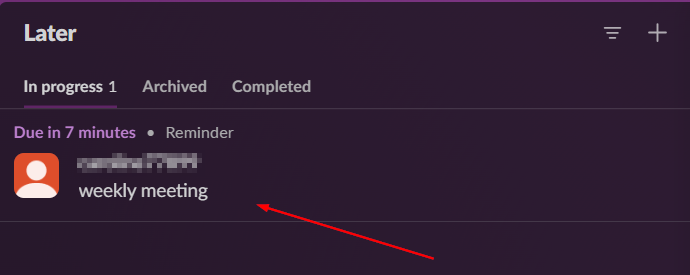 -
Hover over the reminder, then click on the complete icon once you have done the task. 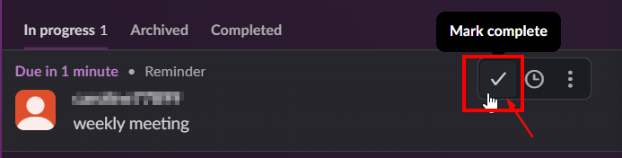
-
Click on the More Actions icon to edit or remove if necessary.
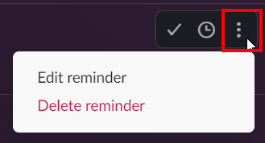
Conclusion
Now, you successfully created a Canvas for a channel and a reminder. And you can:
- Showcase the project plan with your teammates
- Stay organized and on track by receiving timely reminders for important tasks
See next : Zoom Integration